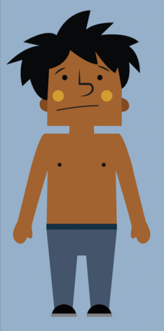
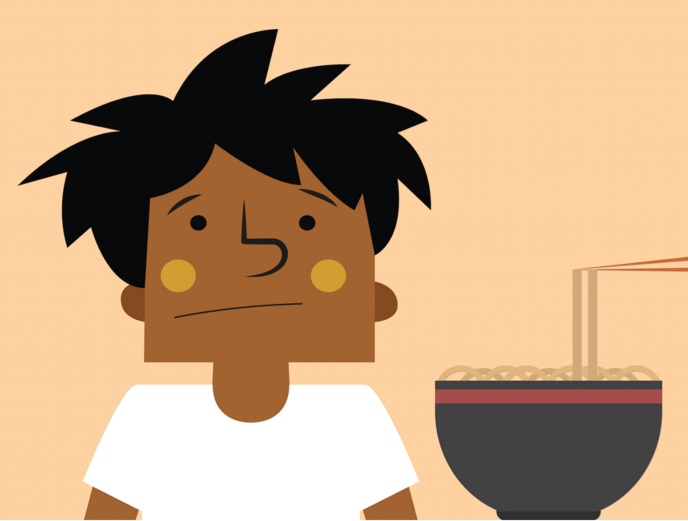

Rubbing the sleep from his eyes, Sophal stands up from his foam mat and stretches long and tall. It was a typical night sleep - fitful due to the heat, dogs barking and street noises.

He makes his way to that familiar spot on the floor where his grandmother hands him a bowl of noodle soup with a small piece of pork in it. He quickly slurps down the broth, pulls on a dingy white uniform shirt, slips on his flip flops, and begins the dusty walk to school.

The streets are an obstacle course of trucks, motorcycles, bicycles, cows, dogs, and kids. Boy, he wishes he could buy some of the grilled pork and rice from his favorite food cart.
Sophal likes to get to school early. There is no playground on the campus of dirt and trash. He and his buddies play gambling games. Today is the sandle game but no money is involved. They need their money for the teacher.
School is only 4 hours a day 6 days a week. There are so many kids and so few teachers that the school day is split into morning and afternoon cohorts. Sophal wonders if he should just quit and find work to help his family. After all he is 11 years
old and still in second grade. Plus he hates his teacher who slaps him.

Sophal wonders if he should just quit and find work to help his family. After all he is 11 years old and still in second grade. Plus he hates his teacher who slaps him.
The teacher demands money from students every day. If Sophal doesn’t pay up the teacher won’t teach him everything he needs to know in order to advance. He doesn’t know if it even matters that the teacher doesn’t show up half of the time.

Sophal’s older brother who became a Buddhist monk in order to get some semblance of an education says that Sophal should be grateful to even have a school to attend. But his parents know how important education is to Sophal and his family's future.

The only private schools they can afford are money factories - only slightly better than the public school. The neighbor boy attended one of those schools for 3 years and still could not pass the Grade 6 government exam. But he sure had a nice uniform.

Sophal’s parents imagine a private school that is affordable; has qualified, caring teachers; safe facilities, and a quality curriculum. But it is hard to be hopeful. Such a school doesn’t seem to exist in Cambodia.